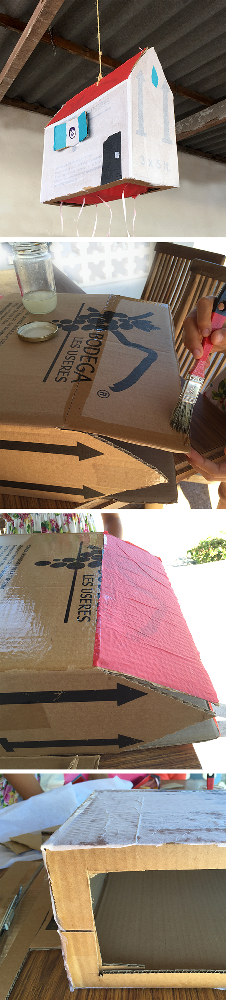

A simple piñata made by Hannah and Carolina for Noah.
Colored paper glued over the entire surface, makes paint superfluous. The floor made of tissue paper breaks quickly when the kids drawn, but this time it remained intact ... hahaha. Jochen luckily helped out so the kids still got to their toys and sweets.
